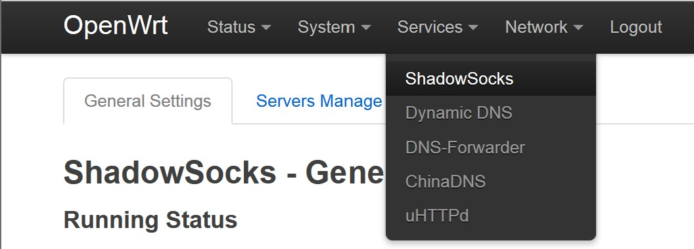

OpenWrt透明代理的食用指南

本文主要介绍了如何在Openwrt环境下进行透明代理的搭建，在Openwrt所支持的luci图形化界面下进行配置大大简化了配置的过程。在配置完成后，所有接入该路由器的设备都可以科学访问被墙网站。
一、所需软件的安装
从原作者aa65535的源http://openwrt-dist.sourceforge.net/进行安装
首先添加Public-key
1 | wget http://openwrt-dist.sourceforge.net/openwrt-dist.pub |
然后通过下面的命令获取处理器架构
1 | opkg print-architecture | awk '{print $2}' |
然后向 /etc/opkg/customfeeds.conf 中添加
1 | src/gz openwrt_dist http://openwrt-dist.sourceforge.net/packages/base/{architecture} |
- 例如我所使用的小米路由器3G 那么我向
1
2
3
4root@OpenWrt:~# opkg print-architecture | awk '{print $2}'
all
noarch
mipsel_24kc/etc/opkg/customfeeds.conf中添加1
2src/gz openwrt_dist http://openwrt-dist.sourceforge.net/packages/base/mipsel_24kc
src/gz openwrt_dist_luci http://openwrt-dist.sourceforge.net/packages/luci
然后
1 | opkg update |
二、Shadowsocks 配置
切换到Services -> ShadowSocks

可以看到有三个服务可以选择
- Transparent Proxy
- SOCKS5 Proxy
- Port Forward
其中Transparent Proxy是我们这次的主角，其本质是通过iptables和ipset的规则以及ss-redir来实现对流量的转发。SOCKS5 Proxy不做过多解释，最后的Port Forward可以用来进行转发DNS的查询。
在配置完所需服务和服务器后切换到Access Control选项卡，也就是对进行访问控制的管理，本质上就是各种iptables和ipsets的参数。
其中Bypass IP List选择ChinaDNS CHNRoute也就是国内的路由表，这是APNIC分配给中国的所有IP段，这样所有访问国内网站的流量就会直连而只有访问国外网站的流量才会被ss-redir转发，进而提升国内网站的访问效率。CHNRoute是跟随ChinaDNS一同安装的，但默认安装的CHNRoute版本较老，可以用以下命令进行更新
1 | $ wget -O- http://ftp.apnic.net/apnic/stats/apnic/delegated-apnic-latest | awk -F\| '/CN\|ipv4/ { printf("%s/%d\n", $4, 32-log($5)/log(2)) }' > /etc/chinadns_chnroute.txt |
Zone LAN中Proxy Type有Direct Global Normal三种，对应直连、全局代理、透明代理，其中self proxy指的是是否代理路由器自身产生的流量。
三、解决DNS污染问题
至此，ShadowSocks的配置已经全部完成了，但是如果不解决DNS污染的问题，依旧会对日常的使用造成很大的影响。
从原理上来讲，ChinaDNS起到的作用只是一个优化路线的功能，尤其针对某些网站在国内和国外都有CDN的情况。ChinaDNS会将DNS请求同时发给国内DNS和可信DNS（通常为国外DNS），如果国内DNS返回的结果在CHNRoute中，则采用，如果国内DNS返回的结果不在CHNRoute中，则丢弃其结果并转而采用可信DNS返回的结果，从而起到一个优化路线的作用。
这样的方法有一个明显的缺陷，如果GFW放弃将域名污染到随机无效IP的方法而转而采用将域名污染到国内有效IP的情况下，ChinaDNS就会失效。但就目前来看，ChinaDNS的方案还是可行的。
还有一点需要注意的是，在ChinaDNS中，可信DNS的优先级高于国内DNS，也就是说如果可信DNS先于国内DNS返回结果，那么无论怎么样都会采用可信DNS的结果，因为这个特性，在ChinaDNS的上游是不应该有DNS缓存的，DNS缓存应当设置在ChinaDNS下游。
DNS-forwarder的配置
从上文的描述中我们知道，ChinaDNS上游的可信DNS是非常重要的，但是在国内的大多数ISP都有针对53端口的DNS查询都有投毒的情况，而且国内ISP的UDP不稳定，所以我选择用DNS-forwarder把DNS查询流量转换为TCP流量，并通过ss-redir进行转发到国外的DNS服务器，如果嫌麻烦的朋友也可以直接使用ss自带的port forward进行转发。

监听端口5353，我选择的DNS是Cloudflare的1.1.1.1，设置好了后我们将1.1.1.1手动添加到ShadowSocks的Access Control中的forward list中，保证DNS-forwarder的查询流量是经过ss-redir转发的。
ChinaDNS配置
接下来就是配置ChinaDNS了

其中有一个Bidirection Filter的选项，打开后如果国外DNS返回的结果在CHNRoute中，那么也不会被采用，通常情况下并不建议打开。
Upstream Servers配置ChinaDNS的上游服务器，其中必须要包含至少一个国内DNS和一个国外DNS。
顺带一提ChinaDNS判断是不是国内DNS是通过IP地址在不在CHNRoute中来判断的，所以如果想要用某些本地ISP提供的DNS作为国内DNS的话，一定要检查其IP地址是否在CHNRoute中。
这里国内DNS我用的是114DNS，国外DNS经过DNS-forwarder转发，所以填上DNS-forwarder的监听地址和端口。
还有一点需要注意的是地址和端口号之间使用”#”分隔而不是”:”
四、dnsmasq配置
现在还剩下两个问题，一个是DHCP广播的DNS服务器，另一个是OpenWrt上本机的DNS服务器。
DHCP配置
我们可以通过配置dnsmasq来进行转发DNS请求并缓存DNS查询的结果。
切换到Network -> DHCP and DNS
首先DNS forwardings填入127.0.0.1#5353，也就是Chinadns的监听地址

接下来切换到Resolv and Hosts Files，勾选Ignore resolve file，否则DHCP会使用WAN口收到的公告的DNS服务器。

这样相当于我们所有的DNS查询请求都首先交给dnsmasq进行转发并缓存，而dnsmasq则进一步将这些请求转发给Chinadns。
这里所有的配置均在/etc/config/dhcp中
至此所有连接到路由器的设备就应该可以正常使用了
OpenWrt本机的DNS服务器设置
现在就剩下路由器本身的DNS查询请求了
切换到Network -> Interfaces，进入到WAN口的配置中，切换到Advanced Settings选项卡，取消勾选Use DNS Servers advertised by peer并在Use custom DNS servers中填入127.0.0.1，这样的话所有路由器自身的DNS查询也会交给dnsmasq。

这样所有从OpenWrt上产生的DNS查询也会交由dnsmasq进行转发。
五、番外
1、自定义不代理的域名
在dnsmasq的manpage中我们可以看到一个参数--ipset=/<domain>[/<domain>...]/<ipset>[,<ipset>...]这个参数的含义是将指定域名的查询结果加入到指定的ipset中，我们可以利用这个参数将我们自定义不代理的域名的解析结果加入到ss_spec_dst_bp这个ipset中便可以实现强制直连。
安装dnsmasq-full
1 | opkg update |
这里会提示失败因为已经安装了dnsmasq，可以先将用opkg download dnsmasq-full将dnsmasq-full的包下载到本地，然后
1 | opkg remove dnsmasq && opkg install ./dnsmasq-full*.ipk |
在/etc/dnsmasq.conf文件的末尾加上一行
1 | conf-dir=/etc/dnsmasq.d/ |
来使dnsmasq从指定的目录读取配置文件，如果这个文件夹不存在可以通过mkdir -p /etc/dnsmasq.d来建立。
添加china-list配置文件
这里主要用到的是china-list也就是国内的域名列表，这个域名列表只包含指定dns服务器的内容，并没有我们需要的指定ipset的功能，所以我们需要对其进行一点修改，可以通过下面这行命令来完成这个操作
1 | wget -O- https://raw.githubusercontent.com/felixonmars/dnsmasq-china-list/master/accelerated-domains.china.conf | awk -F "/" '{print $0; print "ipset=/"$2"/ss_spec_dst_bp"}' > /etc/dnsmasq.d/china_list.conf |
主要用到是awk。
最后/etc/init.d/dnsmasq restart来重启dnsmasq
2、使用cron自动化
cron是一个用于周期性被执行的指令的工具。
通过crontab -e可以编辑需要执行的指令
1 | ┌───────────── minute (0 - 59) |
例如我们想要每天更新一次china-list
1 | 30 3 * * * wget -O- https://raw.githubusercontent.com/felixonmars/dnsmasq-china-list/master/accelerated-domains.china.conf | awk -F "/" '{print $0; print "ipset=/"$2"/ss_spec_dst_bp"}' > /etc/dnsmasq.d/china_list.conf && /etc/init.d/dnsmasq restart |